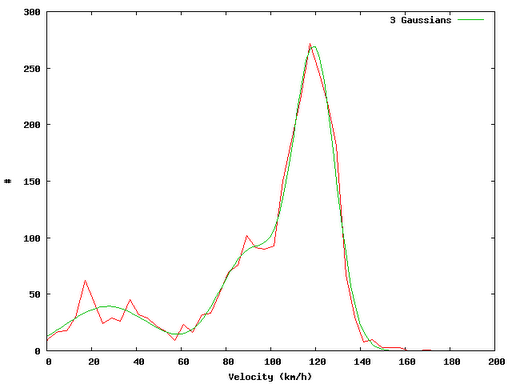

In this post I show a small example on how one can easily evaluate GPX track files using Perl and Gnuplot. The idea in brief: Read in GPX track infile.gpx and extract the velocity distribution. In a first approximation I have fitted gaussian distributions…
The calculation of distances between two points in WGS 84 coordinates is done using the approach given by Vincenty. There are methods with an accuracy of up to 10nm (geographiclib, interesting paper on this topic).

Code Snipplets
The code pieces listed below are extracts of what I have done. Do not expect the code to work - it shall only serve as an idea for you…
Perl Script
#!/usr/bin/perl
use Geo::Gpx;
use Data::Dumper;
use DateTime;
use GIS::Distance;
use Statistics::Lite qw(:all);
use POSIX;
my $gis = GIS::Distance->new();
$gis->formula (“Vincenty”);
my $fh = “infile.gpx”;
Extract vlat from GPX file
my $gpx = Geo::Gpx->new( input => $fh );
my $waypoints = $gpx->waypoints();
my $tracks = $gpx->tracks();
my $iter = $gpx->iterate_trackpoints(); #points();
my (@time, @lat, @lon, @ele);
while (my $pt = $iter->())
{
push (@time, $pt->{time}); # Linux Epoch time
push (@lat,$pt->{lat}); # WGS 84
push (@lon, $pt->{lon}); # WGS 84
push (@ele, $pt->{ele}); # meters
}
my %s_time = statshash (@time);
my %s_lat = statshash (@lat);
my %s_lon = statshash (@lon);
my %s_ele = statshash (@ele);
my $n = 1+$#time;
Velocities
my (@vlat, @dlateral_next, @vhor);
my $ms_kmh = 3.6;
for my $i (0..$n-2)
{
my $d = $gis->distance ($lat[$i],$lon[$i] => $lat[$i+1],$lon[$i+1]);
my $dlateral = $d->meters(); # meters
my $dhorizontal = $ele[$i+1]-$ele[$i]; # meters
my $dt = $time[$i+1]-$time[$i]; # seconds
$dt > 0 or warn;
$dt > 0 or next;
my $vv = sqrt($dlateral**2)/$dt * $ms_kmh;
my $hh = sqrt($dhorizontal**2)/$dt * $ms_kmh;
push (@vlat, $vv); # km/h
push (@vhor, $hh); # km/h
push (@dlateral_next, $dlateral); # meters
}
my %s_vlat = statshash (@vlat);
my %s_vhor = statshash (@vhor);
my %s_dlateral_next = statshash (@dlateral_next);
Distribution
sub distribution
{
my $nbins = floor(sqrt($n));
my $nsigma = 2;
my ($min, $max) = ($s_vlat{mean}-$nsigma$s_vlat{stddev}, $s_vlat{mean}+$nsigma$s_vlat{stddev});
my $d = ($max - $min) / $nbins;
my %hist;
for my $i (0..$nbins-1)
{
$hist{$i}{x} = $min+($i+.5)*$d;
}
for my $i (0..$n-2)
{
my $bin = floor(($vlat[$i]-$min)/$d);
$bin < 0 and warn;
$bin < 0 and $bin = 0;
$bin >= $nbins and warn;
$bin >= $nbins and $bin = $nbins-1;
$hist{$bin}{y} = $hist{$bin}{y}+1;
}
my $f_dist = “dist.txt”;
open (F_DIST, “>”.$f_dist);
for my $j (0..$nbins-1)
{
printf F_DIST “%d %f %f\n”, $j, $hist{$j}{x}, $hist{$j}{y};
}
}
distribution();
GnuPlot Fitting
f1(x) = p1*exp(-(x-m1)2/(2*s12))
f2(x) = p2*exp(-(x-m2)2/(2*s22))
f3(x) = p3*exp(-(x-m3)2/(2*s32))
m1=120
m2=80
m3=50
f(x) = f1(x)+f2(x)+f3(x)
fit f(x) “dist.txt” u 2:3 via p1,p2,p3,m1,m2,m3,s1,s2,s3
plot ”dist.txt” u 2:3 w l,f(x)